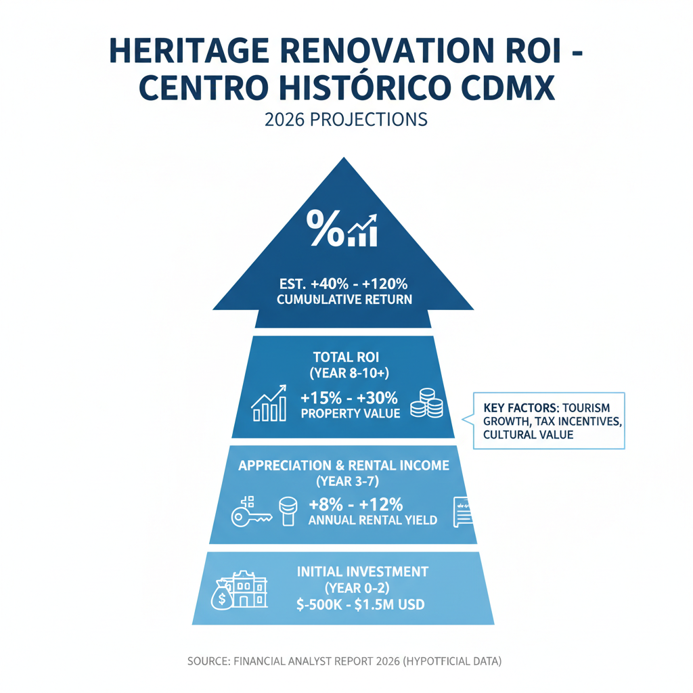

Architectural Guide 2026
Reclaiming Grandeur: Centro Histórico's Unseen Luxury
We translate the monumental ambition of Mexico City's historic core into a precise, architecturally sound investment, bridging international standards with unparalleled local expertise. This is where centuries of history meet 2026 innovation, engineered for the discerning global patron.
The Resident Architect's View
As an architect rooted in Condesa, I often find myself drawn eastward, pulled by the gravitational force of the Centro Histórico. It’s not just the grandeur of the Palacio Nacional or the sheer verticality of the Metropolitan Cathedral that captivates me. It's the way the late afternoon light rakes across a centuries-old volcanic tezontle facade on Calle Madero, revealing a patina that no new build could ever replicate. It’s the unexpected quiet of an inner patio, an acoustic oasis amidst the symphony of the city—the distant call of the gasero, the lilting melody of an organillero, all providing a rhythmic backdrop to a neighborhood that has been the beating heart of a nation for over six centuries.

Erik Martínez, AIA
Principal Architect. Former SHoP Architects NYC. Bringing international precision to CDMX's most complex heritage assets.
Iconic Landmarks
- Palacio Nacional
- Catedral Metropolitana
- Palacio de Bellas Artes
- Templo Mayor
- Casa de los Azulejos
- Palacio de Correos de México
The Palimpsest of Power: Centuries Etched in Stone
The Centro Histórico of Mexico City is an unparalleled convergence of epochs, a dynamic palimpsest of pre-Hispanic Tenochtitlan, Viceroyalty, neoclassical, and modern architecture. Since the 14th century, this nine-square-kilometer UNESCO World Heritage site, comprising 668 densely packed urban blocks and over 9,000 buildings, has served as the continuous political and cultural epicenter of the nation. It holds an astounding 1,550 officially declared monuments of historical importance. As global capital pivots towards emerging markets, driven by North American nearshoring and the proliferation of high-income digital nomadism, this historic core has become a highly targeted vector for ultra-high-net-worth real estate investment in 2026. Renovated, design-forward properties here currently project gross rental yields of 7% to 9%, vastly outperforming traditional luxury districts. However, realizing this potential demands an exacting understanding of its unique complexities.
The Architecture of Epochs: Navigating a Living Museum
The very urban morphology of the Centro is a direct inheritance of its 18th and 19th-century colonial grid. Narrow streets, high-density blocks, and an emphasis on walkability define daily life. This historic layout, while romantic, also presents significant infrastructural headwinds. The sheer volume of catalogued buildings means that architectural intervention is not merely a matter of municipal zoning, but of supreme federal cultural oversight. Every single block within Perimeter A, encompassing the pre-Hispanic epicenter and initial viceregal expansion, is subject to intense federal scrutiny, with specific corridors like Calle Madero and the streets surrounding Plaza de Santo Domingo hyper-concentrated with iconic monuments. Our expertise lies in seamlessly integrating 21st-century luxury into this irreplaceable historical fabric.
Geotechnical Precision: Building on a Living Lakebed
The most profound technical constraint in the Centro Histórico is geological. The entirety of the district is situated within Seismic Zone III (Lakebed), a classification indicating a sub-soil composed of highly compressible, water-saturated lacustrine clays from the ancient Lake Texcoco. During seismic events, these soft clays act as a fluid dynamic amplifier, massively amplifying the duration and acceleration of seismic waves at the surface. This was the primary mechanism of destruction in both the catastrophic 1985 and 2017 earthquakes. Compounding this, the city's aggressive water extraction causes regional subsidence, leading the historic center to sink by several centimeters per year, often differentially, distorting historic foundations.
For luxury renovations, superficial foundations are entirely inadequate. We mandate structures anchored using deep friction piles, driven through the soft clays into deeper, more stable strata, combined with highly engineered rigid structural frames to withstand liquefaction and amplification forces. We bridge the gap between rigorous US NCARB/AIA engineering standards and local CDMX maistro labor, ensuring precise execution and neutralizing the so-called 'Gringo Tax' by leveraging transparent 'cost-plus' contracts (20-30% management fee over audited receipts), where the fair market rate for high-end finishes ranges from MXN 30,000 to 50,000 per square meter.
Federal Mandate: Preserving the Soul of a Nation
Authority over the Centro Histórico's built environment is bifurcated. The Instituto Nacional de Antropología e Historia (INAH) holds absolute jurisdiction over all structures built prior to 1900, safeguarding the colonial and 19th-century fabric. Conversely, the Instituto Nacional de Bellas Artes y Literatura (INBAL) controls 20th-century architectural heritage, heavily regulating Art Deco, Art Nouveau, and early modernist structures. Any intervention on a catalogued property, or even an adjacent non-catalogued one, triggers extreme aesthetic and technical constraints governed by the Manual de Imagen Urbana.
The constraints on exterior facades are absolute. Modern construction materials are strictly forbidden from visible application. Deteriorated stucco must be replaced with traditional, breathable lime-and-sand (cal-arena) plaster mixtures, not Portland cement. Chromatic identity is heavily policed, with facades painted only in historically accurate, authorized color palettes (e.g., from the Comex ColorLife historical gamma). Modern aluminum or exposed PVC window frames are prohibited; windows and heavy doors must be restored or meticulously replicated using traditional carpentry or classical wrought iron (ferrería) techniques. Original volumetric proportions and decorative moldings must be preserved. We navigate these Heritage Hurdles, securing permits like the INAH-02-002 for structural work, ensuring your investment achieves unparalleled aesthetic authenticity without the risk of clausura (project suspension). While exteriors are sacred, INAH generally permits reversible modernization of interiors, allowing for modern plumbing, kitchens, and acoustic decoupling.
Water Autonomy: Engineering for a Resilient Future
The most systemic environmental threat to Mexico City's habitability is water security. The metropolitan area relies heavily on the Sistema Cutzamala, which, despite recent replenishment to over 90% capacity in 2026, faces an underlying structural deficit. Mexico City's aquifers are severely over-exploited, causing subsidence, and municipal water delivery to the Centro Histórico remains highly intermittent, lacking continuous flow or constant hydraulic pressure for modern fixtures. To insulate a premium property, exhaustive onsite water storage and pressurization systems are mandatory. The architectural footprint must accommodate massive subterranean cisterns (cisternas). For mid-sized homes, 10,000-liter cisterns are standard, scaling up to 55,000 liters for larger multi-unit properties to ensure autonomy without reliance on expensive pipas (private water truck deliveries). Robust hydropneumatic pump systems are critical to drive water from the cisterns to upper floors.
Architectural Feasibility: Centro Historico 2026
| Project Type | Avg. Permit Time | Seismic Risk Level | Conservation Status |
|---|---|---|---|
| Iconic Monument Restoration (Pre-1900 INAH) | 24 - 48 Months | Extreme (Heritage, Seismic, Logistics) | Absolute Federal Oversight |
| 20th Century Heritage Adaptation (INBAL Regulated) | 18 - 36 Months | High (Seismic, Strict Facade Rules) | Rigorous Regulatory Compliance |
| Boutique Residential Conversion (Interior Focus) | 12 - 24 Months | Moderate (Infrastructure Hardening, Acoustic Engineering) | Conditional Interior Freedom |
Specialized Renovations: Invisible Modernization for the 21st Century
Restoring a Centro Histórico property is an exercise in Invisible Modernization. We maintain the grand volumes and historical materials—the dense volcanic tezontle, solid brick, exposed timber beams—while systematically engineering out the infrastructural headwinds. This includes sophisticated acoustic solutions: decoupled 'room-within-a-room' interior stud walls with high-density mineral wool insulation, secondary interior acoustic glazing to preserve exterior facades while breaking sound transmission, and concealed mass-loaded vinyl within original doors. For digital connectivity, we deploy hardwired Ethernet backbones, commercial-grade WAP meshes, and explore enterprise-grade symmetrical connections where available. Power stability is ensured via whole-house voltage regulators, UPS systems, and instantaneous lithium-ion battery storage arrays (e.g., ThunderStorage systems) to counter routine apagones and voltage fluctuations, ensuring seamless operational continuity for elite tenants.
High-End Interior Design: Where History Meets Contemporary Luxury
Our interior philosophy for the Centro Histórico centers on a profound respect for the existing structure, blending Mexican Modernism with global luxury standards. We specify local materials like hand-carved cantera stone and artisanal chukum plaster to create spaces deeply rooted in CDMX’s heritage. Lighting design is a critical discipline, carefully deployed to mitigate the often deep, narrow floor plans of historic buildings, enhancing natural light and creating dramatic effects within historically significant volumes. Every detail, from custom architectural lighting to integrated climate control, is considered to deliver a refined, authentic, and utterly comfortable living experience that honors the past while embracing the future.
The Centro Historico Cheat Sheet
- Best Streets Calle Madero, Republica de Cuba, Alameda Central
- Zoning Code H/3/20/M (Habitacional, 3 Stories, 20% Permeable, Medium Density)
- Est. Cost / m² MXN 30,000 - 50,000 / m² (Luxury Finish)
- Best Coffee Café de Tacuba (Historic), Tierra Adentro (Modern)
- Local Quirk The relentless, high-decibel acoustic environment, from gaseros to organilleros, requiring advanced soundproofing.
The Challenge
The primary challenge in the Centro Histórico lies in reconciling the immense beauty and historical significance of the built environment with its profound geotechnical vulnerability (Seismic Zone III, severe subsidence), the pervasive acoustic pollution, severe water intermittency, and the labyrinthine, multi-layered federal and municipal bureaucracy.
The notorious 'Gringo Tax' can inflate construction quotes by 30-100% over local baselines. Permitting alone can consume 12-24 months in the pre-construction phase, often requiring continuous legal extensions (prórrogas). Furthermore, the recent saturation of the short-term rental market (occupancy rates 55-65%) and emerging rent control initiatives pose mathematical threats to aggressive yield projections.
Our Solution
We employ advanced geotechnical engineering, leveraging deep pile foundations and rigid structural frames for seismic resilience. Our architectural solutions integrate 'room-within-a-room' acoustic isolation and deploy sophisticated on-site water autonomy systems with large cisternas and hydropneumatic pumps. We ensure enterprise-grade power and digital connectivity through robust backup systems and hardwired networks, delivering first-world utility stability within an ancient urban core.
We neutralize the 'Gringo Tax' by establishing transparent 'cost-plus' contracts with trusted local construction teams. By partnering with heritage-certified Directors Responsables de Obra (DRO-C) and elite Notarios Públicos early in the process, we streamline complex SEDUVI, INAH, and INBAL negotiations. This accelerates time-to-market, unlocks optimal usage rights, and facilitates a strategic pivot from saturated short-term rentals towards high-yield, premium medium-term corporate leases for the nearshoring executive demographic.


Planning to Buy?
Don't sign a contract before a technical audit. We offer pre-purchase structural assessments in Centro Historico.
2026 Cost Report
Get our detailed breakdown of current labor and material costs for luxury residential in CDMX.
Start Your Centro Historico Legacy
NYC Precision. Mexican Craft. We eliminate uncertainty for international investors.